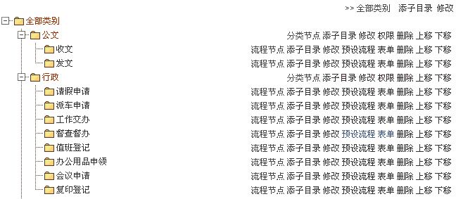
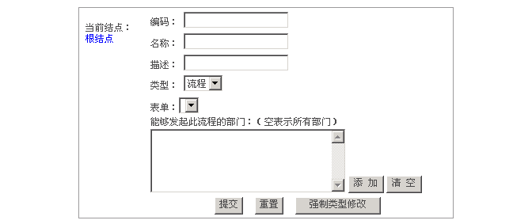

工作流类别 |
| “工作流”下的“流程类型”是对企事业单位工作流类别进行统一管理。包括：新增类别、修改类别、删除类别，支持类别排序功能下面是工作流类别图： |
 |
|  |
| 1、新增类别 （1）添加一级类别。 点击最顶端“添子目录”然后在“目录增加或修改”处输入“编码”、“名称”、“描述”（注意：编号不能重复）。类型选择分类,点击添加按钮选择能够发起此流程的部门：（空表示所有部门），最后点击“提交”按钮。即可添加一级类别。 （2）添加二级及二级以下类别“添加分类”节点。光标指向所要添加结点上，然后点击“添加子目录”。输入相关信息即可填加子目录。 |
| 2、“添加流程”节点：添加流程节点和新增类别操作基本一样，只需用将类型选择流程式即可添加流程节点。 |
| 3、“强制类型修改”：当需要强制修改某些类时时，需要点击该按钮来修改。注意：如果该项中已经含有内容，则更改以后会造成问题。 |
| 4、“预设流程”：光标指向所要查看/修改结点上，点击预设流程，就可以来查看或修改预设流程了。 |
| 5、“权限”：光标指向分类节点，点击“权限”对该分类进行权限设定。具体权限操作请查看权限管理。 |
| 6、“表单”：光表指向所需查看/修改结点上，然后点击“表单”就可以对表单进行操作和修改。 |
| 7、“上移/下移”选中该目录，然后点击“上移/下移”就可以上移下移该目录。 |
| 8、“删除”选中该目录，然后点击“删除”就可以删除该目录。 |
| 9、“管理”对该目录下进行添加、删除、修改等操作。 |